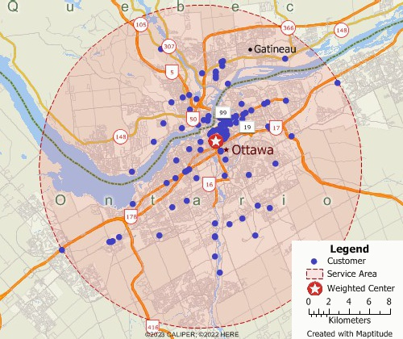

Clustering and optimization model

1. Problem Definition / Objective
The objective is to optimize the supply chain of a food manufacturing company in Canada by minimizing the total cost of the operation. And to determine which distribution centers will supply which stores.
2. Data Available
Distribution Centers in Canada
8 Distribution Centers| DC | latitude | longitude |
|---|---|---|
| dc_1 | 45.4215 | -75.6972 |
| dc_2 | 43.6532 | -79.3832 |
| dc_3 | 53.5461 | -113.4938 |
Stores in Canada
3500 stores| store | latitude | longitude |
|---|---|---|
| store_1 | 49.2827 | -123.1207 |
| store_2 | 51.0447 | -114.0719 |
| store_3 | 45.5017 | -73.5673 |
Costs per Distribution Center
| dc | gasoline_cost | truck_depreciation | driver_salary | loading_cost |
|---|---|---|---|---|
| dc_1 | 500 | 200 | 1000 | 150 |
| dc_2 | 600 | 250 | 1050 | 160 |
| dc_3 | 550 | 220 | 1100 | 140 |
Demand by Store
| store | demand per month |
|---|---|
| store_1 | 400 |
| store_2 | 700 |
| store_3 | 450 |
3. Data Processing and Exploration
Analyze the profit and loss statement (P&L) to extract the costs by distribution center. Bring all costs to the same unit of measurement. And plot the stores and distribution centers on a map to better understanding of the problem.
4. Solution Development
- Clustering model: K-Means model to group stores according to the distance between them. Using their latitude and longitude. The number of clusters was defined according to restrictions imposed by the trucks such as the number of kilometers traveled and the driving time.
- Traveling Salesman Problem (TSP): To determine the order in which the truck will visit each of the stores within the defined clusters, a TSP model was applied using Google's OR-Tools library. To do this, it was necessary to calculate the distance and driving time of the stores between each other and also to the distribution center, building a distance matrix that was the input of the TSP modelwith the OSRM API.
- Cost Allocation: From the P&L and taking into account the costs of fuel, amortization of the truck, time to load and unload the truck and the driver's salary, each store was assigned a cost per transported unit that multiplied by the store's demand results in the total cost of the trip and a total cost for the entire operation.
- Optimization model in RiverLogic: The optimization model developed at RiverLogic was responsible for minimizing the total cost of the operation by determining which distribution centers should supply which stores. "What if" scenarios were also developed with new distribution centers in new locations and closing existing distribution centers. The optimization model was developed by a team specialized in optimization and RiverLogic.
The objective was to define a new supply plan whose total cost was lower than the existing one, which we used as a baseline.
5. Tools and Technologies
- Python
- Scikit-Learn
- Pandas
- Numpy
- Google's OR-Tools library
- OSRM API
6. Results and Evaluation
The project's evaluation metric was the total cost of the operation, which ended up saving the company thousands of dollars. Stakeholders were very enthusiastic about the proposed solution and the analysis of the "What if" scenarios.